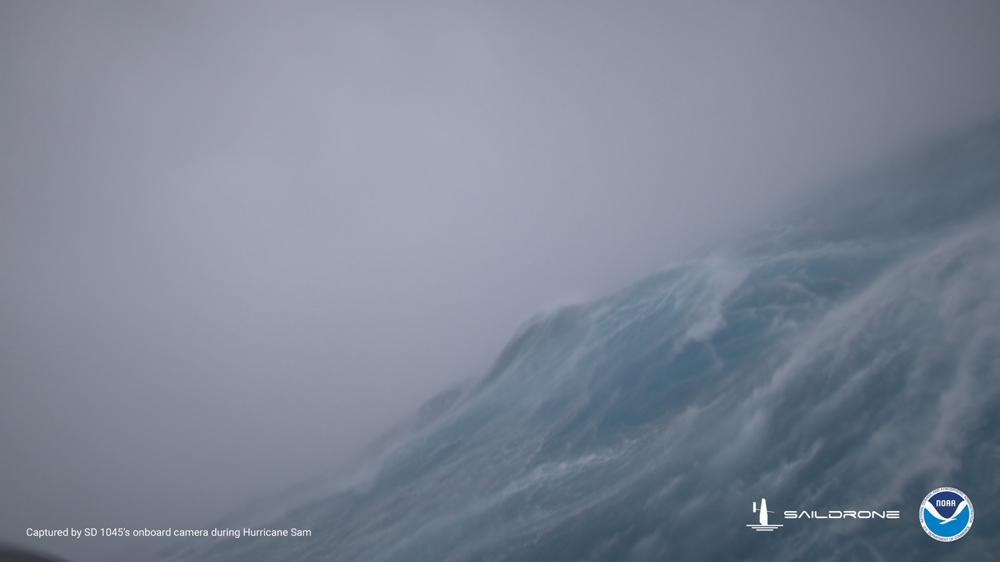
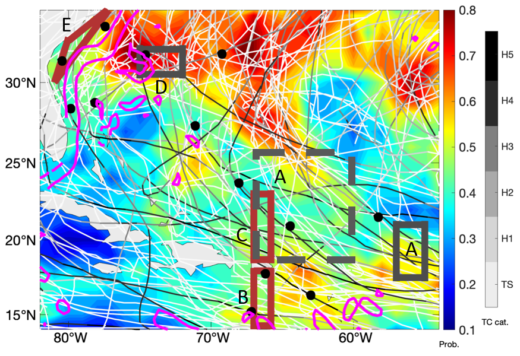

2021 Saildrone Atlantic Hurricane Mission
Five saildrones were deployed during the 2021 Atlantic hurricane season to observe conditions near the ocean's surface. One saildrone was directed through the eyewall of category-4 Hurricane Sam.

Objectives
(1) Measure near-surface atmospheric and upper-ocean parameters to calculate energy and momentum fluxes between the atmosphere and ocean outside and within hurricanes.
(2) Synchronize the deployments of saildrone and ocean gliders to measure the coupling between the surface atmosphere and upper ocean.
(3) Transmit data in real-time to operational weather prediction centers to improve atmosphere-ocean initial conditions in forecast models.
(4) Apply the observations to understand how air-sea interaction affects hurricane intensity and to advance hurricane prediction models.
Deployments
Saildrone observations covered August 1-November 17, 2021 in five areas where chances of hurricane occurrence are high (highlighted by red and gray boxes in the map below). Observations were sent to worldwide weather prediction centers in real time to assist their operational forecasts. Data are publicly available.

Outcomes
One saildrone observed category-5 Hurricane Sam. It took a video and measured surface heat fluxes and near-surface oceanic-atmospheric conditions near the eyewall of Sam. Other saildrones observed four tropical storms (Fred, Grace, Henri, Peter). Saildrones and ocean gliders were coordinated to take near-collocated, simultaneous measurements of the upper ocean and surface ocean-atmosphere conditions. Comparisons between data from the saildrones and moored buoys were also made to cross-validate the measurement by the two observing platforms. Atmospheric dropsondes and oceanic floats were launched by NOAA and NASA research aircraft near the saildrones, providing additional observations to study interactions between the ocean and atmosphere. Publications based on the results of the mission are available here.
NOAA Mission Team:
Gregory Foltz, AOML (Co-Lead)
Chidong Zhang, PMEL (Co-Lead)
Andy Chiodi, PMEL/University of Washington
Calvin Mordy, PMEL/University of Washington
Christian Meinig, PMEL
Dongxiao Zhang, PMEL/University of Washington
Edward (Ned) Cokelet, PMEL
Eugene Burger, PMEL
Francis Bringas, AOML
Gostavo Goni, AOML
Kevin O'Brien, PMEL/University of Washington
Noah Lawrence-Slavas, PMEL
Joaquin Trinanes, AOML/University of Santiago, Spain
Jun Zhang, AOML/University of Miami
Collaborators:
Catherine Edwards, Skidaway Institute of Oceanography, University of Georgia
Shuyi Chen, Edoardo Mazza, and Brandon Kerns,
University of Washington
Xingchao Chen, The Penn State University
With support of
Maria Morales Caez, The Penn State University
This mission was supported by NOAA's Office of Oceanic and Atmospheric Research (OAR) and Office of Marine and Aviation Operations (OMAO) in collaboration with Saildrone, Inc.
Photos & Videos
2021 Saildrone Atlantic Hurricanes Mission (credit: Dr. Gregory Foltz, NOAA/AOML) on PMEL's SmugMug
2021 Atlantic Hurricane Mission: 24 Hours in Hurricane Sam Video